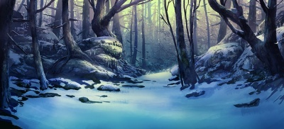
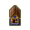

|
Локация: | Кратер |
|---|---|---|
| Регион: | Нострия, Лес Последнего Натиска | |
| Карта: | | |
| Местность: | | |
| Незаметность: | 50 | |
| Открытие: | |
Содержание |
Кратер
|  | Район: | Кратер |
|---|---|---|
| Местность: | | |
| Незаметность: | 50 |
| Здесь появился огромный кратер глубиной более сотни метров. Дыра пышет нестерпимым жаром, а по снежным стенам льется кровь. | ||
Местные обитатели
- Эймир Йотунгар, мастер-охотник во время выполнения квеста Уничтожить угрозу
 Спрятанная обсерватория
| Район: | Кратер | |
|---|---|---|
| Местность: | |
| Эта импровизированная обсерватория построена на верхушке столетнего дерева и предназначена исключительно для наблюдения за кратером. В воздухе стоит мускусный запах. | ||
Местные обитатели
- Йохан Сорьясон, ученый. После завершения квеста "Уничтожить угрозу" выдает квесты: